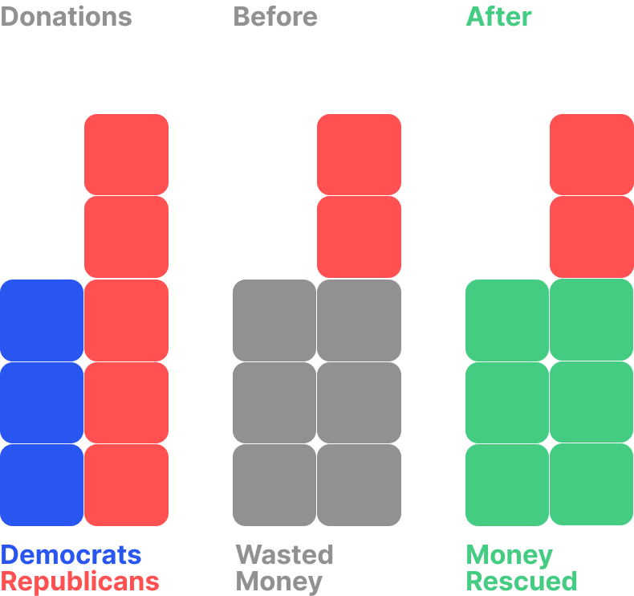

Double Impact Project
Transforming political donations into charitable impact. Your contribution supports your party while simultaneously funding vital causes.
until the next donation
Democratic
Donations
Republican
Donations
Towards
Charity
Towards
Party
How it Works
Every year, hundreds of millions of dollars are poured into political campaigns. Both Republicans and Democrats spend heavily on TV ads, each side trying to outdo the other. But in reality, much of the effect cancels out. Think about it: if one side spends $1,000,000 on ads and the other spends the same, plausibly no votes are changed. But we as a nation have burned through $2,000,000.
There is a better way. What if the money still cancels out, but was directed somewhere far more impactful? What if the same dollars could instead feed the hungry, clothe those in need, and heal the sick?
This is exactly what the Double Impact project accomplishes. You can pledge money to the party of your choice, but the twist is, if someone pledges money to the opposite party, both contributions "cancel out", and we will send that money to charity that both parties agree to at the end of the month. It's a win-win! Your voice is heard, and those in need get the help they deserve.
Funding Charities Both Parties Support
By participating in Double Impact, you're redirecting rivalry, making competition a positive sum game. You're not just supporting your political views, but also funding causes that benefit society as a whole.

Feeding America
Feeding America is the largest hunger-relief organization in the United States, working to provide meals to individuals and families struggling with food insecurity.
Junior Achievement
Junior Achievement (JA) inspires and prepares young people to succeed in a global economy by delivering hands-on, experiential learning in financial literacy, work readiness, and entrepreneurship.
Give Well
GiveWell is a nonprofit dedicated to finding and recommending the most effective charities to help donors make informed decisions. Through rigorous research and analysis, GiveWell identifies high-impact giving opportunities, ensuring that donations are used efficiently to improve lives and reduce suffering globally. Their focus on evidence-based approaches makes it easier for individuals to maximize the impact of their contributions.

St. Jude Children’s Research Hospital
St. Jude Children’s Research Hospital is leading the way in treating and defeating pediatric catastrophic diseases such as cancer. No family ever receives a bill from St. Jude for treatment, travel, housing, or food, ensuring that financial concerns are never a barrier to life-saving care. Their groundbreaking research and commitment to saving lives have made a global impact in the fight against childhood diseases.
Heifer International
Heifer International works to end hunger and poverty around the world by empowering communities through sustainable agriculture and economic development.
By providing livestock, seeds, and training, Heifer helps families lift themselves out of poverty, ensuring they can achieve self-reliance and build better futures. Your donation can transform lives by providing resources that create lasting change.

American Red Cross
The American Red Cross provides emergency assistance, disaster relief, and education in the United States.
About Us
We are a team of volunteer innovators, scholars, and technologists dedicated to making the pie bigger for everyone. Our team has members who plan to support candidates on both sides of the 2024 election. We believe technology, creatively applied, can lead to new possibilities for "Third Way" political solutions. This can lead us closer to enjoying ease and abundance – by tapping our potential for perfect coordination as a society.

Samuel Galler
Sam Galler is a thought leader in finance, a Rhodes Scholar, a Harvard Social Studies Graduate, and a former USA junior national chess champion. He has contributed to numerous nonprofit initiatives for social good such as the mental health campaign It Gets Brighter. This project was sparked by Sam's initial idea.

Jacob Cole
Jacob Cole is the founder of Ideaflow, a company building collective intelligence tools, which has raised over $10 million from top VCs. He was formerly a collective intelligence researcher at MIT.

Sahar Massachi
Sahar Massachi worked on the civic integrity team at Facebook, ran data for fundraising at Wikipedia, and founded two prosocial startups. Since then, Sahar became a fellow Berkman Klein Center for Internet & Society at Harvard University. He's a member of the advisory committee of the Louis D. Brandeis Legacy Fund for Social Justice, a StartingBloc fellow, and a Roddenbery Fellow. He co-founded and was the first executive director of Integrity Institute.
Jack Jesionowski
Jack Jesionowski is a serial entrepreneur and founder of Systemic Altruism, the nonprofit dedicated to finding creative, high leverage, technical, and social solutions to the world's most pressing problems and partnered with Double Impact. He is also a viral content creator, and inspirational speakers, and his videos are followed by Elon Musk.

Simon Zhang
Simon Zhang is the lead engineer behind the Double Impact Initiative. Simon is the one that cordinates everyone's ideas and makes the Double Impact project a reality. Simon is a software engineer working at Amazon Web Services. He has 5 years experience working on numerous startups and big tech projects.
The Double Impact Project is built in collaboration with Systemic Altruism, a charity that aims to address problems similar to this one by finding innovative and high-leverage solutions. To learn more, volunteer, or donate to make more projects like this happen, please visit.
Frequently Asked Questions
The meaning is twofold. The first meaning is you are contributing to the success of the party you believe in, but you are also helping those in need through charity. The second meaning behind this is more interesting. Did you know that if you donate to the side that has less money, any donation you make is effectively doubled? If the Democrats have $1000 and the republicans have $1100 dollars, and you donate $25 dollars to the democrats, that $25 will also take $25 from the republican party's coffers. This effectively making your $25 donation a $50 donation to charity! Read more.
When your money is donated, it will be stored in a politically neutral charity bank account for up to a week. Every Sunday, we total up how much each party has pledged. For the money that is "canceled out", we send it to the charities listed above evenly, and the rest goes to whichever party "wins".